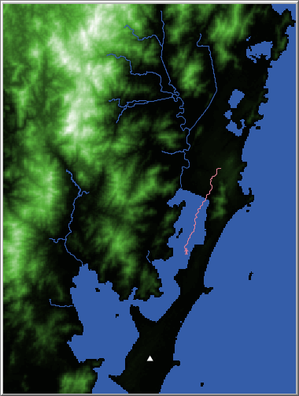

Modelagem
Agent-Based Model
Nesta seção estão disponibilizadas as informações relativas aos modelos baseado em agentes (ABM) produzido na tese. O modelo foi construído no software NetLogo 6.2, que pode ser obtido de forma gratuita aqui.
Os arquivos para execução do modelo, código-fonte e relatório ODD também estão disponíveis para download neste link, na pasta “modelos”, ou então clicando nos títulos abaixo.
Mobilidade

Este modelo tem como propósito simular a movimentação de
populações sambaquieiras ao longo da região do complexo lagunar do
litoral sul-catarinense. Neste modelo adaptamos técnicas de análise de
caminhos de menor custo (Least Cost Path), comumente utilizadas
em ambiente SIG, para um modelo baseado em agentes. A base para esta
circulação é feita através de um mapa de custo de deslocamento,
produzido no SIG. Os custos de deslocamento foram pensados de acordo com
as particularidades do modo de vida das populações sambaquieiras, que
era intensamente conectado e integrado aos corpos d’água da região.
Portanto, muitas vezes os agentes optam pelo trânsito com canoas ao
longo das lagoas. Os pontos de partida e destino são aleatórios, o
objetivo do modelo não é definir uma rota real de deslocamento entre
sítios, mas sim observar as formas de deslocamento na paisagem e as
variações conforme diferentes valores de variáveis são
experimentados.
Redes e Dinâmicas

Este modelo simula dois aspectos da população sambaquieira
no complexo lagunar do litoral sul catarinense: a ocupação do território
e as possíveis redes de trocas entre as diferentes comunidades. O
propósito desta simulação é compreender e explorar as diferentes formas
de articulação das omunidades sambaquieiras no passado. Este modelo
utiliza simplificações para simular os processos de criação de novas
áreas de ocupação e também para simular áreas favoráveis para a ocupação
humana. Não é um objetivo da simulação predizer áreas de maior
probabilidade de ocorrência de sítios arqueológicos. Os padrões
utilizados para explorar a articulação das comunidades são decorrentes
das diferentes estratégias de troca utilizadas pelos agentes. O modelo
simula duas formas de trocas, baseadas no trabalho de Sahlins e Graeber
(2017): reciprocidade generalizada (grn? no modelo) e
reciprocidade balanceada (brn? no modelo).